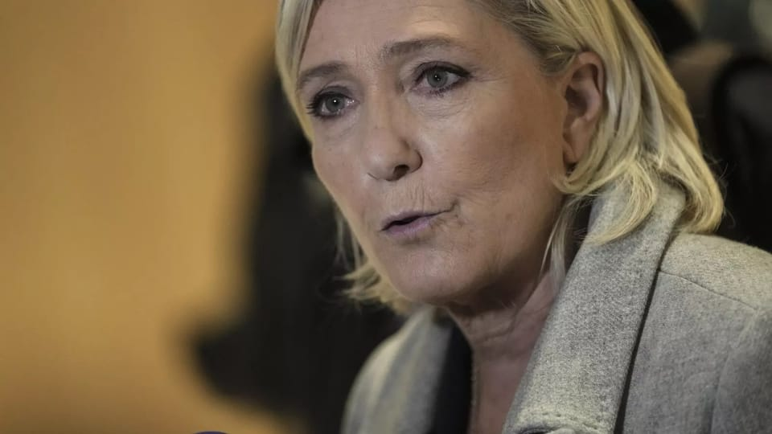

世界苦茶04月01日新闻 | 36条 | 四大行在A股融资5200亿

四大行在A股融资5200亿 | 中共发布新的围台演习 | 韩宪法法院将4日判决尹锡悦弹劾案 | 瑞典荷兰围乌克兰提供军援 | 普京下令征兵16万 | 勒庞被判刑禁止公职选举 | 胡德华去世
三个水枪手
苦茶数据
美元兑人民币：7.27（昨日7.25，前日7.27）
美元兑日元：149.62（昨日150.06，前日150.81）
上证指数：3355（昨日3321，前日3351）
标普500指数：5611（昨日5580，前日5693）
比特币：82917（昨日83825，前日86780）
布伦特原油：74.74（昨日73.40，前日73.63）
中国新闻
• 中共解放军4月1日清晨通告围岛演习： 本日起，东部战区组织陆海空炮兵力，位台岛周边组织舰机多向抵近台岛，重点演练海空战备警巡、夺取综合制权、对海对陆打击、要域要道封控等科目，这是对台独分裂势力的严重警告和有力遏制。中华民国国防部发稿说：共军内部“越反越贪”“军队作战能力虚假”，凸显其外强中干窘态。此前，国军3月17至21日首次举行“立即备战操演”，防长顾立雄当时表示该次操演是半年一次计划性的，如中共演习或袭扰到一定强度后也会非计划性地下令举行。
• 亚洲最大红土网球中心启用 ：亚洲最大红土网球中心星期天在中国浙江省湖州市正式启用。湖州市政府新闻办星期天在官方微信公众号“湖州发布”公告上述消息。根据公告，湖州国际红土网球中心当天下午正式启用。中共湖州市委书记陈浩致词时说，湖州将以中心启用为契机，以红土网球带动硬地网球，以职业赛事带动大众赛事，以青少年网球带动全年龄段网球，以女子网球大众赛带动网球运动多元化，以顶级网校带动大中小学校网球运动，以“网球+”带动城市形象整体跃升，高起点、高标准打造中国红土网球名城。
• 胡耀邦之子胡德华逝世 ：中国共产党新媒体平台通报，中共原总书记胡耀邦三子胡德华病逝，享年77岁。“红船融媒”星期一在微信公众号引述胡德华治丧委员会消息称，中科院软件中心原负责人、胡耀邦之子胡德华在星期天晚因病逝世，享年77岁。据公开资料，胡德华是湖南浏阳人，生于1948年，为中共原总书记胡耀邦三子。胡德华1986年开始从事科学研究，担任中科院软件中心负责人；1994年组建北京泰利特科技公司，从事金融、银行和办公室等软件系统的开发。
• 邓炳强警示香港四大威胁 ：香港保安局局长邓炳强认为，香港仍然面对四大威胁，即外部势力抹黑和制裁、潜逃者继续从事危害国家安全的行为、本土恐怖主义，以及软对抗，并说市民要慎思明辨。邓炳强接受香港《星岛日报》访问时说，随着《香港国安法》和《维护国家安全条例》的实施，社会已经由乱及治，但不能掉以轻心，因为上述四大威胁。邓炳强也说，香港官方会继续加强情报搜集和执法工作，并进一步修订法例，加入国家安全相关元素，并会持续进行宣传教育，让市民明白国安风险犹在，继而懂得慎思明辨，不受软对抗谎言煽动，同心协力守护香港。
• 铁路招聘网链接误导 ：针对中国铁路人才招聘网有链接跳转成人直播网页，中国铁路成都局集团有限公司工作人员表示，正协调处理，原因需待技术部门分析。据华商报大风新闻报道，有网民反映，中国铁路人才招聘网“单位一览”页面中，点击“中国铁路成都局集团有限公司”会跳转至“成人直播”网页。跳转页面为“警告！包含成人直播内容，未成年禁止观看”。中国铁路成都局集团有限公司工作人员解释称，网站的管理权限不在他们单位，技术部门已反馈相关问题，正在协调处理。具体原因还需要技术部门分析。
• 中央整顿干部不作为问题 ：中共中央政治局召开会议，强调加强领导班子建设，着力解决乱作为、不作为、不敢为、不善为问题，推进领导干部能上能下常态化。据央视新闻客户端消息，中共政治局星期一召开会议，审议《生态环境保护督察工作条例》《关于二十届中央第四轮巡视情况的综合报告》。中共总书记习近平主持会议。会议称，中央生态环境保护督察是中共中央推进生态文明建设的一项重大举措，从压实各级领导干部生态环境保护政治责任入手，严肃查处一批破坏生态环境的重大典型案件，推动解决一批人民群众反映强烈的突出环境问题，取得良好效果。
• 习近平拟访东南亚三国 ：香港媒体星期一报道，中国国家主席习近平预计将在下个月出访东南亚三个国家，分别是马来西亚、越南，以及柬埔寨。《南华早报》星期一引述外交消息人士称，习近平可能在4月中旬启程，并计划在马来西亚停留三天。另一名不愿透露姓名的消息人士说，习近平此次访马，将以他去年11月在北京与马来西亚首相安华的富有成效的会晤为基础。该消息人士补充说，此次访问“肯定有利于”促进中马双边关系。
• 南海发现亿吨级海上油田 ：中国海油称，在南中国海东部海域勘探发现惠州19-6亿吨级油田。这是中国首次探获海上深层—超深层碎屑岩大型整装油田。中国海油星期一在官网宣布，在南中国海深层-超深层获得惠州19-6亿吨级油田发现。该公司称，惠州19-6油田位于南中国海东部海域。经测试，钻井平均日产原油413桶，天然气2.41百万立方英尺。通过持续勘探，实现惠州19-6油田探明地质储量超1亿吨油当量。据新华社报道，惠州19-6油田位于珠江口盆地惠州凹陷，距离深圳约170公里。
• 中办国办推动信用体系改革 ：中办国办3月21日发《关于健全社会信用体系的意见》：有条件的地方和部门可以开展自然人信用评价，用作向守信主体提供激励政策的参考，严禁将非信用信息和个人私密信息纳入信用评价。严格失信被执行人认定程序，优化相关失信惩戒措施。探索建立公共信用信息价值收益合理分享机制，维护信息资产权益。加强信用政策出台前的综合评估，防止信用管理措施泛化滥用。 （翻评：外网本来是误解，现在可能要变成预言？）
亚太印太新闻
• 韩国宪法法院定于4月4日11时宣判尹锡悦弹劾案： 宪法法院现有8名法官，若有6名赞成，弹劾案即获得通过，尹锡悦去职，60日内举行大选；若弹劾案未获通过，尹锡悦将立即恢复总统职务。
• 赖清德信任度大幅回升 ：政治立场亲绿的《美丽岛电子报》最新民意调查结果显示，台湾总统赖清德信任度和执政满意度均大幅提升。《美丽岛电子报》星期一公布的民调结果显示，有56.7%受访民众信任赖清德，其中23.2%很信任、33.5%还算信任，比上月增加6.2个百分点；37.0%不信任，其中有20.6%很不信任、16.4%有点不信任，比上月减少3.5个百分点，未明确回答有6.3%。赖清德本月的信任度达到就任总统以来的次高。《美丽岛电子报》指出，赖清德本月信任度陡增并非施政获得重大成果，而是在抗中保台氛围与针对国安威胁提出17项因应策略的铺垫下，可预期两岸敌意螺旋升高而借力使力堆叠出“聚旗效应”，也借此转移民众对中央政府施政停滞的注意力，成功促使赖清德执政评价止跌弹升。
• 台民调显示，罢免立委争议大 ：台湾媒体展开的民调显示，反对立委大罢免行动的台湾民众多于赞成者，但百分比不到五成，当地民众对此课题有两极化看法。根据台湾《联合报》星期一在网站公布的民调结果，对于目前部分政党或公民团体所推动的大罢免立委行动，47%的台湾民众反对大罢免，赞成者为43%，其中民进党支持者有76%力挺大罢免立委，国民党及民众党支持者则分别有77%和61%持反对立场；政党中立者26%赞成，49%反对。此外，台湾民众对于立法院对立的主因看法也相当分歧。有35%民众认为是因为民进党未尊重新民意，但也有42%的人觉得是在野党过度杯葛政策所致，23%无意见。
• 台湾首次研讨战时财政 ：台湾媒体报道，台湾国防部首度邀集中央与地方政府4月18日齐聚开会，讨论在战争状态如何迅速完成资源调度与财务转换。据台湾TVBS新闻网星期一报道，国防部全民防卫动员署发出《战费编列及预算转换执行作法研讨会》开会通知，首度邀集中央与地方政府齐聚开会。这是国防部首度针对战时预算动员进行全台级跨部门会议，象征全民防卫政策正朝向全政府动员的深化阶段，财政与主计体系正式被纳入动员主轴。
• 缅甸宣布全国哀悼一周 ：缅甸军政府宣布举行为期一周的全国哀悼活动，缅怀大地震遇难者。法新社报道，缅甸军政府星期一宣布这一决定。官方哀悼期将持续至4月6日，其间缅甸将降半旗志哀。缅甸实皆省上星期五发生7.7级大地震，目前已造成至少1700人死亡，救灾工作仍在进行中。
• 美国救援缅甸行动缓慢 ：就在世界各国迅速向遭遇强烈地震重创的缅甸派遣紧急救援队之时，曾在对外援助方面处于领先地位的美国却反应缓慢。中国大陆、俄罗斯、印度、泰国和新加坡的救援队伍已在周末抵达缅甸，香港、马来西亚、菲律宾、越南和孟加拉的救援队伍也赶赴灾区。其中，中国大陆和新加坡救援队星期天在曼德勒救出受困者。《纽约时报》星期天报道，世界上最富有的国家美国，至今没有为缅甸提供任何援助。美国总统特朗普星期五受询时说，美国已与缅甸当局沟通，他说：“那里的情况非常糟糕，我们会提供援助。”
• 世卫列缅震为最高级别危机 ：世界卫生组织宣布，缅甸地震属于最高级别的紧急情况，并紧急寻求800万美元用于未来30天内挽救生命和防止疾病暴发。法新社报道，世卫组织星期天说，由于缅甸在外科手术方面能力有限，而伤亡和创伤人数庞大，感染风险高，再加上缅甸的基本情况，地震可能会加剧疾病暴发的风险。世卫组织已将缅甸此次危机列为三级紧急事件，并发出紧急募捐呼吁。三级紧急事件为世卫组织紧急响应框架下的最高响应级别。
• 杜特尔特律师欲撤ICC案 ：菲律宾前总统杜特尔特的首席律师说，他们掌握“强有力”的论据，定能在国际刑事法院开庭前就推翻案件。法新社报道，英国知名律师考夫曼星期天在海牙受访时说，他希望在国际刑事法院确认对杜特尔特的指控前，以国际刑事法院对这起案件没有管辖权的论据，要求撤销案件。他说，在国际刑事法院对杜特尔特启动调查之前，菲律宾已正式退出国际刑事法院的创始条约《罗马规约》。
科技新闻
• TikTok出售协议可能将敲定 ：美国总统特朗普表示，将在来临星期六的最后期限前，与TikTok母公司字节跳动达成TikTok的出售协议。特朗普于今年1月设定了4月5日的截止日期，要求TikTok出售给非中国买家，否则将面临禁令。据路透社报道，特朗普星期日晚间在空军一号上对记者表示，有很多潜在买家，且对TikTok的兴趣非常大。他说：“我希望TikTok能继续存在。”
财经新闻
• 黄金突破3100美元新高 ：因担心美国关税带来的潜在通胀压力，黄金价格突破每安士3100美元，创下历史新高。分析师认为，黄金这一避险资产有望创下1986年以来最强劲的季度表现。根据路透社，截至星期一晚上8时，现货黄金上涨1.1%至3117.29美元，此前曾触及创纪录的3128.06美元。期货黄金则上涨1.2%，报3151.10 美元。在有利的货币政策背景、央行强劲买盘和交易所交易基金需求等因素的支撑下，黄金今年迄今已上涨约18%，而2024年曾上涨超过27%。
• 华为年报营收增利跌 ：华为集团星期一发布2024年报显示，去年集团全球销售收入增长22.4%至8621亿元人民币，但净利大跌28%至626亿元人民币。公司发言人称，净利下跌主要是由于在研发上的大量投入，达到1797亿元，约占营收的20%，而且出售荣耀手机业务所带来的收入提振消失，导致盈利下滑。华为主要业务中，信息与通信技术基础设施贡献最大，增长4.9%至3699亿元。
• 市监总局推新规防乱检查 ：中国国家市场监督管理总局宣布修订规章，要求各级市场监督管理部门避免随意检查、多头检查、重复检查。市场监管总局星期一在官网发布《国家市场监督管理总局关于废止和修改部分部门规章的决定》，废止规章一部，修改规章16部，5月1日起施行。市监总局称，修改内容强化了涉企检查有关要求，明确了相关许可审批权限，对部分罚款事项进行了调整。市场监管总局将修订《企业公示信息抽查暂行办法》，明确“各级市场监督管理部门应当加强检查统筹，有效避免随意检查、多头检查、重复检查”。
• 台拟应对美对等关税影响 ：针对美国即将在本周推出对等关税等措施，台湾总统赖清德星期天听取行政院长卓荣泰等人的简报，并请卓荣泰与台湾国安会秘书长吴钊燮带领行政及国安团队，确保台湾利益与经济金融的稳定及发展。据《联合报》报道，台湾总统府发言人郭雅慧星期一说，赖清德星期天傍晚在官邸，听取卓荣泰、行政院副院长郑丽君及台美经贸工作小组成员的简报。郭雅慧称，赖清德听取了行政院就美国即将推出的对等关税等相关措施，针对可能的各种税率与措施等不同情境，进行模拟及推估可能的冲击影响，以及预应方案的整备。
• 特朗普通话英相谈关税 ：英国首相斯塔默星期天晚上与美国总统特朗普通电话，就“一项经济繁荣协议”进行了“富有成效”的讨论。彭博社报道，本周是英国争取美国豁免关税的关键一周，因为特朗普的对等关税措施过几天就会生效，美国对所有外国进口汽车加征25％关税也将同时实施。根据唐宁街10号星期天发表的声明，两位领导人同意谈判将于本周继续快速进行，并会在未来几天保持联系。
• 越南总理提振铁路产业 ：越南总理范明政呼吁全国突破极限和思维定式，着力建成越南自主铁路工业体系。据越南通讯社报道，范明政周六主持国家铁路重点项目指导委员会首次会议时，强调了投资建设铁路项目和发展铁路工业的重要性。越南国会近期先后通过三项决议，批准建设南北高速铁路、老街—河内—海防铁路线，以及河内与胡志明市的城市铁路系统。
• 长和交易受审查引关注 ：中国大陆官方决定审查香港长和集团出售巴拿马港口的交易，亲北京的港媒刊文指出，香港社会各界人士坚决支持进行审查，希望长和悬崖勒马，“以国家安全为大局，终止有关交易”。《文汇报》星期天刊登文章称，长和拟售巴拿马港口一事备受关注，中国国家市场监督管理总局反垄断二司负责人日前回应媒体提问时表示，将依法审查有关交易以保护市场公平竞争，维护社会公共利益。文章说，香港社会各界人士坚决支持依法进行审查，认为这是对国家经济安全与发展利益权利的坚定捍卫。他们强调，任何商业行为都不得损害国家主权、安全和发展利益；还望有关企业悬崖勒马，在国家利益与大是大非面前保持清醒认识，以国家安全为大局，终止有关交易。
• 四大行A股融资5200亿 ：中国四家国有大行公告，向特定对象发行A股股票预案，计划募集资金共计5200亿元人民币。据新华社报道，中国银行、中国建设银行、交通银行、中国邮政储蓄银行星期天分别在上交所发布公告，披露向特定对象发行A股股票预案。根据公告，中行、建行、交行、邮储银行将分别发行约272.73亿股、113.27亿股、137.77亿股、205.696亿股的A股股票，计划募集资金分别不超过1650亿元、1050亿元、1200亿元、1300亿元。 （翻评：中国A股的作用，现在四大行的资本金充足率有问题，国内政府个人企业杠杆率都太高，然后国家队强拉银行股上涨，然后开始做这么大规模的增发，这个韭菜真的是明着割。一口气吸收5200亿的流动性，太可怕了。）
俄乌战争
• 普京下令征兵16万人 ：俄罗斯总统普京下令在今年7月中旬之前征召16万名军人，这个数字高于之前的征兵计划。法新社报道，普京星期一签署春季征兵法令，宣布在今年4月1日至7月15日期间，征兵16万人。这个指标高于去年的15万人，而2022年的数字则为13万4500人。普京去年下令将俄罗斯现役军队规模扩大到150万人。他还在2023年将征兵年龄上限从27岁提高到30岁，即18岁至30岁的俄罗斯男子均有资格应征入伍。
• 俄美讨论稀土合作项目 ：俄罗斯总统普京的一名特使指出，莫斯科和华盛顿已开始就俄罗斯稀土金属等合作项目进行讨论。俄罗斯国际经济和投资合作特使德米特里耶夫接受《消息报》访问时说：“稀土金属是两国的重要合作领域，当然，我们已开始就俄罗斯各种稀土金属和其他项目进行讨论。”德米特里耶夫同时担任俄罗斯直接投资基金首席执行官。俄罗斯谈判代表团2月与沙特阿拉伯和美国官员举行会谈，德米特里耶夫是俄方成员之一。
• 特朗普批泽连斯基毁协议 ：美国总统特朗普指责乌克兰总统泽连斯基试图拒绝美乌矿产协议。他还说，如果泽连斯基这样做，“将有大麻烦”。特朗普星期天在总统专机“空军一号”上对记者说，美乌就稀土问题达成协议，现在泽连斯基想重新谈判协议，让乌克兰成为北约成员国。特朗普说：“乌克兰永远不会成为北约成员国，他明白这一点。如果他想重新谈判协议，他将有大麻烦。”
• 荷兰承诺2025年向乌克兰提供逾20亿美元援助，其中5.4亿美元用于无人机项目： 3月31日，荷兰国防大臣鲁本·布雷克尔曼斯和国务秘书海斯·图因曼表示，荷兰将于2025年拨出20亿欧元支持乌克兰。布雷克尔曼斯指出，这笔资金中将包含5亿欧元，专门用于乌克兰的无人机防线项目。乌克兰国防部于2月宣布启动该项目，称之为一项旨在将无人机系统整合进前线作战的新军事举措。目前，乌克兰军队已成功开发并使用各种空中、海上和地面无人机进行侦察、作战及其他任务。乌克兰也正在扩大本土生产规模，总统顾问亚历山大·卡梅申表示，乌克兰目前已有能力每年生产超过500万架第一人称视角无人机。布雷克尔曼斯在声明中表示：“这些无人机将改变战场形势，并真正拯救生命。”
• 瑞典宣布为乌克兰提供价值16亿美元的新军事援助： 周一，瑞典宣布向乌克兰提供新一轮价值160亿瑞典克朗的军事援助，这是该北欧国家迄今为止规模最大的一笔援助。瑞典表示，此举旨在帮助基辅在结束战争的谈判中巩固地位。瑞典国防大臣帕尔·荣松在新闻发布会上表示，这项援助中有90亿克朗将用于购买新装备，这一采购过程将由瑞典国防物资管理局主导。另外约50亿克朗将作为财政捐助，用于支持乌克兰的国防工业。荣松表示：“我们现在正处于战争的关键阶段，目前我们关注的重点是尽最大可能支持乌克兰，以便他们在未来的谈判中占据有利地位。”
其他新闻
• 哈梅内伊警告猛烈报复 ：伊朗最高领袖哈梅内伊说，如果伊朗受到攻击，将予以猛烈报复。法新社报道，哈梅内伊星期一发表开斋节演讲，他在谈到美国总统特朗普近期的威胁言论时说：“他们恫言要搞破坏。如果他们真的这么做，一定会遭到伊朗猛烈的反击。”特朗普星期六接受采访时说，如果伊朗不就核计划达成协议，就会被轰炸。他也警告称，美国会用“二次关税”惩罚伊朗。
• 叙反对派建过渡政府 ：叙利亚临时总统沙拉说，过渡政府会致力于在重建国家方面达成共识，但他也坦承无法满足所有人的需求。法新社报道，沙拉领导的反对派武装力量去年12月初推翻阿萨德政权，随后带领国家向新政府过渡。叙利亚于星期六宣布成立过渡内阁，目前还没有总理职位。叙利亚宗派问题复杂，且长年战乱，过渡政府面临巨大挑战。东北部由库尔德人领导的自治政府，拒绝承认沙拉新政府的合法性，并指它没有反映国家的多样性。
• 勒庞被判刑禁选公职 ：法国法院在挪用欧盟公款案中，判处极右翼领袖勒庞四年有期徒刑，缓刑两年，并禁止她竞选公职五年，立即执行。综合外电报道，巴黎一家法院星期一裁定，极右翼政党国民联盟前党魁勒庞及其他被告，挪用欧洲议会资金罪名成立。勒庞获判四年监禁，缓期两年执行，并佩戴电子脚铐；法院也禁止她竞选公职五年，这项判决立即生效。勒庞的律师说，她会对法院判决提出上诉。
• 特朗普或5月访沙特 ：有消息指，美国总统特朗普计划5月中旬访问沙特阿拉伯。这将是特朗普1月上任以来首次出访。美国新闻网站Axios星期天引述美国政府官员及消息人士的话报道，美国与沙特政府高级官员近几周就此次访问进行了讨论，目前正为访问做准备。双方会谈主要涉及外国投资、加强美国与波斯湾国家关系，以及结束中东地区冲突等议题。
• 特朗普暗示谋求三任总统 ：美国总统特朗普3月30日受访时表示，他不排除寻求第三个总统任期的可能性。根据美国宪法第22修正案，总统最多只能担任两届。特朗普声称，存在一些“方法”可以让他实现这一目标，并明确表示他“不是在开玩笑”，有很多人希望他这样做。但目前还有很长的路要走，考虑这个问题还为时尚早。NBC询问了一种可能的情况，即副总统万斯竞选总统，然后将职位传给特朗普。特朗普回应说那是一种方法，但还有其他特朗普不愿透露的方法。